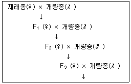
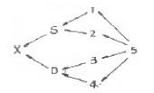
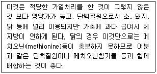
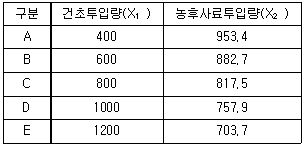

축산기사 (2011-10-02 기출문제)
1과목: 가축육종학
1. 고기소에 있어서 유각적색(PPbb)인 헤어포드(Hereford)종과 무각흑색(PPBB)인 앵거스(Angus)종을 교배시키면 F1의 외모는 어떻게 발현되는가?(오류 신고가 접수된 문제입니다. 반드시 정답과 해설을 확인하시기 바랍니다.)
- 유각적색
- 유각흑색
- 무각적색
- 무각흑색
(정답률: 69%)

2. 젖소 종모우의 평가방법인 BLUP(최량선형불편 추정법)를 고안한 사람은?
- Davidson
- Harvey
- Henderson
- Robertson
(정답률: 73%)
3. 다음과 같은 방식의 잡종 교배 방법으로 불량한 재래종 가축의 능력을 단시간에 효과적으로 개량하는 데 이용될 수 있는 교배 방법은?

- 누진교배
- 윤환교배
- 종료교배
- 퇴교배
(정답률: 85%)
4. White Leghorn 닭의 평균 산란수는 280개 이고, Rhodes lsland Red 닭의 평균 산란수는 250개 였다. White Leghorn(♀) × Rhodes lsland Red(♂ )의 교배에 의하여 생산된 잡종의 평균 산란수는 290개였으며, Rhodes lsland Red(♀) × White Leghorn(♂ )의 교배에 의하여 생산된 잡종의 평균 산란수는 280개 였다고 하면 이 때의 잡종 강세율은?
- 1.8%
- 1.9%
- 7.0%
- 7.5%
(정답률: 41%)
5. 선발차(選拔差 : Selection Differential)의 정의는?
- 선발된 개체들 중 암 ㆍ 수의 차이
- 선발된 개체와 도태된 개체의 수
- 선발된 개체의 암컷의 수
- 선발된 개체의 평균과 집단의 평균간 차이
(정답률: 89%)
6. 유전자 A는 상가적 효과만 작용한다고 가정하고 환경효과는 0이라 가정할 때 AA의 유전적인 값이 10이고, aa의 유전적인 값이 4이면 Aa의 유전적인 값은 얼마인가?
- 14
- 10
- 8
- 7
(정답률: 73%)
7. 소에 있어서 2배체(Diploid) 상태에서의 염색체 수는?
- 40개
- 50개
- 60개
- 80개
(정답률: 80%)
8. 돼지의 유전적 개량과 능력향상에 효과적인 돼지 집단의 구조는?
- 원형
- 피라밋형
- 사각형
- 일자형
(정답률: 83%)
9. 스트레스 감수성 PSS돈의 검사방법으로 정확도가 가장 높은 방법은?
- Halothane 검정법
- 육안판정법
- SPI검정법
- 초음파 검사법
(정답률: 81%)
10. 소에 있어 이성 쌍태를 분만 하는 경우 암컷은 불임이 되는 것이 일반적이다. 이와 같은 암컷을 무엇이라 하는가?
- Klinefelter 증
- Turner 증
- 프리마틴(Free martin)
- Robertsonian 전위
(정답률: 85%)
11. 산란계의 선발요건에 해당되지 않는 것은?
- 몸의 크기
- 우모색
- 사료 이용성
- 산란기간 동안의 폐사율
(정답률: 73%)
12. 계통 교잡시 나타나는 일반 조합 능력(一般組合能力)은 주로 어떤 유전자 작용에 의존하는가?
- 우성 작용
- 초우성 작용
- 상위성 작용
- 상가성 작용
(정답률: 55%)
13. 다음의 가축 모색 중 우성에 속하지 않는 것은?
- 소의 흑색
- 닭의 Minorca 흑색
- Hereford 종의 안면백색
- Berkshire 종의 흑색
(정답률: 43%)
14. 다음 중 돼지에서 잡종강세를 이용한 교배법이 아닌 것은?
- 퇴교배
- 상호역교배
- 근친교배
- 윤환교배
(정답률: 78%)
15. 어느 젖소의 3회 측정 평균비유량이 5000㎏이었고, 이 젖소가 속한 우군 평균비유량이 4000㎏이었을 때 이 젖소의 차기 추정생산 능력은? (단, 비유량의 반복력은 50% 이다.)
- 4650㎏
- 4750㎏
- 4850㎏
- 4950㎏
(정답률: 64%)
16. RNA는 DNA와 다른 어떤 염기(鹽基)를 지니고 있는가?
- 티민(Thymine)
- 아데닌(Adenine)
- 우라실(Uracil)
- 시토신(Cytosine)
(정답률: 83%)
17. X의 가계도가 다음과 같을 때 X의 생산에 이용된 교배법은?

- 퇴교배(back cross)
- 누진교배(grading up)
- 계통교배(line breeding)
- 무작위 교배(random mating)
(정답률: 72%)
18. 다음 중 반성유전을 하는 형질은?
- Plymouth Rock종 닭의 횡반
- Leghorn종 닭의 백색 우모
- Cornish종의 닭의 완두관
- Leghorn종 닭의 단관
(정답률: 66%)
19. Dorset Horn종과 Suffolk종 면양을 교배할 때 뿔의 유전 양식은?
- 반성유전
- 한성유전
- 귀선유전
- 종성유전
(정답률: 58%)
20. 후대검정시 숫종축의 딸이 평균유량이 6400㎏이고, 이들 어미의 평균 유량은 6100㎏이라 할 때 본 수컷의 종웅지수(種雄指數 : sire index)는?
- 300㎏
- 6250㎏
- 6400㎏
- 6700㎏
(정답률: 53%)
2과목: 가축번식생리학
21. 다음 태반형태와 가축의 종류 연결이 옳은 것은?
- 산재성 태반 - 면양
- 궁부성 태반 - 소
- 대상성 태반 - 말
- 반상성 태반 - 돼지
(정답률: 75%)
22. 소의 발정주기를 동기화시키기 위하여 가장 흔히 단독으로 사용하는 것은?
- 프롤락틴(RPL)
- 임마혈청성 성선자극호르몬(PMSG)
- 임부융모성 성선자극호르몬(hCG)
- 프로스타글란딘(PGF2a)
(정답률: 74%)
23. 정자의 완성과정과 관계가 없는 것은?
- 골지기
- 두모기
- 첨체기
- 접합기
(정답률: 70%)
24. 소 난자의 배란후 수정능 유지기간은?
- 6 ~ 8 시간
- 20 ~ 24시간
- 30 ~ 48시간
- 48 ~ 72시간
(정답률: 69%)
25. 정자의 질을 평가하기 위하여 검사하는 방법 설명으로 옳지 않은 것은?
- 온도 충격시험-저온과 고온에서 견디는 능력을 측정하는 방법
- 대사능력시험-해당 지수와 산소소모량을 측정하는 방법
- 에틸렌블루 환원시험-정자가 착색되는 시간을 측정하는 방법
- 정자의 운동성-정자의 활력, 생존율을 측정하는 방법
(정답률: 74%)
26. 난소낭종과 관련이 없는 것은?
- 무발정 증상
- 사모광증 증상
- 둔성발정
- 비유량이 많은 젖소에서 다발
(정답률: 46%)
27. 소에서 비외과적 수정란 이식시 수정란의 이식 부위로서 어느 곳이 가장 적당한가?
- 자궁각 선단
- 자궁체내
- 자궁경내
- 질심부
(정답률: 75%)
28. 정자의 운동성에 영향을 미치는 주성이 아닌 것은?
- 주류성
- 주촉성
- 주기성
- 주화성
(정답률: 60%)
29. 성숙한 포유가축의 난포에서 제 2극체가 방출되는 난자의 제2차 성숙분열은 언제 일어나는가?
- 배란 직전
- 배란 직후
- 수정 직전
- 수정 직후
(정답률: 62%)
30. 난소의 기능 이상으로 인하여 나타나는 현상이 아닌 것은?
- 무발정
- 이상발정
- 배란장해
- 다정자 침입
(정답률: 69%)
31. 닭의 산란주기(産卵週期)를 바르게 설명한 것은?
- 한 마리의 암탉이 1년 중 산란한 계란의 수
- 한 마리의 암탉이 1개월 중 산란한 계란의 수
- 한 마리의 암탉이 연일 산란하는 계란의 수
- 한 마리의 암탉이 연일 산란하는 시간의 주기적 변화
(정답률: 61%)
32. 다음 성성숙과 관련된 설명 중 틀린 것은?
- 춘기발동기가 시작되는 때를 성성숙이라 한다.
- 수소의 성성숙은 교미와 사정이 가능하다.
- 암소의 성성숙은 발정이 나타나고 임신이 가능하다
- 성성숙기가 번식적령기와 반드시 일치하는 것은 아니다.
(정답률: 74%)
33. 포유류의 정소를 체온보다 낮은 온도로 유지하는데 직접적으로 관계가 없는 것은?
- 음낭피부의 땀샘
- 백막
- 육양막
- 내정소근
(정답률: 58%)
34. 발정주기 동기화의 응용과 이점에 관한 내용 중 틀린 것은?
- 분만관리와 지출관리가 더욱 용이해진다.
- 가축의 개량과 능력검정사업을 효과적으로 수행할 수 있게 한다.
- 배란을 자유로이 유도할 수 없어 계획번식과 생산조절은 불가능하다.
- 인공수정의 실시가 용이해져 정액공급 및 보관 등 제반 업무를 효율적으로 수행할 수 있다.
(정답률: 85%)
35. 축산분야의 응용에서 분만이 지연될 때 분만촉진제로서 또는 유즙의 유하(流下)를 유도하기 위하여 사용되기도 하는 Peptide계는?
- PGF2a
- PGF1a
- Oxytocin
- ADH
(정답률: 66%)
36. 소에서 비외과적인 방법으로 수정란을 이식하려 할 때 수정란의 발달시기와 이식부위로 가장 알맞은 것은?
- 발달시기 : 8~16세포기 이식부위 : 난관
- 발달시기 : 8~16세포기 이식부위 : 자궁
- 발달시기 : 상실기~배반포기 이식부위 : 난관
- 발달시기 : 상실기~배반포기 이식부위 : 자궁
(정답률: 72%)
37. 소의 수정란 이식과정에서 사용되는 기술을 순서대로 나열한 것은?
- 다배란 처리 → 채란 → 검사 → 발정 동기화 → 이식
- 바배란 처리 → 발정 동기화 → 채란 → 검사 → 이식
- 발정 동기화 → 다배란 처리 → 채란 → 검사 → 이식
- 다배란 처리 → 채란 → 발정 동기화 → 검사 → 이식
(정답률: 36%)
38. 제 1, 2극체의 방출시기를 정확하게 표현한 것은?
- 제 1극체 - 배란직후, 제 2극체 - 수정직전
- 제 1극체 - 배란직전, 제 2극체 - 수정직후
- 제 1극체 - 배란직후, 제 2극체 - 수정직후
- 제 1극체 - 배란직전, 제 2극체 - 수정직전
(정답률: 55%)
39. 부고환의 기능이 아닌 것은?
- 정자의 운반
- 정자의 농축
- 정자의 성숙
- 정자의 분열
(정답률: 70%)
40. 소의 경우 분만 후 얼마 정도면 자궁이 완전히 퇴축(退縮)되는 가?
- 10일 전후
- 20 ~ 25일
- 30 ~ 45일
- 50 ~ 60일
(정답률: 65%)
3과목: 가축사양학
41. 비육우 사양에 있어서 비육촉진제로 사용하지 않는 것은?
- 항생제
- 황산화제
- 생균제제
- 호르몬제
(정답률: 52%)
42. 다음에서 설명하는 이것은 무엇인가?

- 채종박
- 면식박
- 대두박
- 임자박
(정답률: 63%)
43. 착유우 사료에 있어서 조단백질 중 반추위 미분해성 단백질(UIP)의 적정 비율은?
- 약 35%
- 약 55%
- 약 75%
- 약 95%
(정답률: 58%)
44. 갈색 산란계의 산란초기 사료의 칼슘함량이 가장 적당한 것은?
- 1.1 ~ 1.2%
- 1.8 ~ 2.5%
- 3.5 ~ 3.7%
- 4.0 ~ 4.5%
(정답률: 61%)
45. 다음 중 단당류에 속하지 않는 것은?
- Maltose
- Galactose
- Mannose
- Fructose
(정답률: 58%)
46. 각 영양소의 기능 설명이 옳지 않은 것은?
- Cystine - 황 함유 아미노산
- Oleic acid - 필수지방산
- Vitamin C - 괴혈병 치료
- 코발트(Co) - Vitamin B12 구성인자
(정답률: 63%)
47. 반추동물의 타액에 관한 설명으로 틀린 것은?
- 사료의 저작과 삼킴을 돕는다.
- 반추위내 pH를 6 ~ 7 사이로 유지시킨다.
- 아밀라아제가 들어있어 전분을 분해한다.
- 거품생성을 방지하여 고창증을 예방한다.
(정답률: 69%)
48. 케톤체(Ketone body)가 생기는 원인과 거리가 먼 것은?
- 초산과 낙산이 많을 경우
- 포도당의 섭취량이 매우 적은 경우
- oxaloacetate가 많은 경우
- 간에서 당류의 분해에 이상이 있는 경우
(정답률: 49%)
49. 돼지 영양에서 영양적 결핍이 가장 민감한 성장 단계는?
- 강정기
- 포유기
- 육성기
- 비육기
(정답률: 79%)
50. 착유우에 있어서 젖 생산을 최대한 발휘하면서 체중 감소를 줄이고, 사료 섭취량을 향상시키며, 제1위의 소화 장애를 최소화하기 위한 방법이 아닌 것은?
- 사료는 완전사료를 제조하여 자주 급여한다.
- 사료섭취량을 향상시키기 위하여 사료의 변경은 전량을 단번에 교체 급여한다.
- 조섬유, 조단백질, 발효가능 탄수화물, 지방, 무기물 및 비타민의 함량을 적절히 유지한다.
- 젖 생산 능력, 사료섭취량 및 우유의 상태를 고려하여 사료를 조절 급여한다.
(정답률: 84%)
51. 포도당 1분자가 체내에서 완전히 산화된다면 에너지 발생효율은 약 얼마인가?
- 약 40%
- 약 30%
- 약 20%
- 약 10%
(정답률: 65%)
52. 송아지 반추위 발달을 위한 조치로 옳지 않은 것은?
- 신선하고 깨끗한 물을 충분히 급여한다.
- 혐기적 환경을 유지한다.
- 충분한 양의 송아지 사료를 급여한다.
- 호기적 환경을 유지한다.
(정답률: 62%)
53. 착유시 맥동기의 가장 적합한 분당 맥동 주기로 가장 적합한 것은?
- 40 ~ 50회
- 50 ~ 60회
- 60 ~ 70회
- 70 ~ 80회
(정답률: 57%)
54. 자돈의 위내 pH를 낮추는 목적으로 사용되는 사료첨가제는?
- 생균제
- 유기산제
- 식물추출물
- 항생제
(정답률: 79%)
55. 다음 영양소 중 무기물인 것은?
- 탄수화물
- 지방
- 단백질
- 광물질
(정답률: 82%)
56. 분만 후 유열에 걸린 적이 있는 젖소의 유열 발생 예방에 관계있는 비타민은?
- 비타민 A
- 비타민 B12
- 비타민 C
- 비타민 D
(정답률: 52%)
57. 지방이 근육내 침착되어 마블링이 많이 생성되도록 하기 위해 비육말기에는 어떤 사료를 급여해야 하는가?
- 고단백사료
- 고열량사료
- 고칼슘사료
- 고섬유사료
(정답률: 75%)
58. 가소화양분총량(TDN)이 72%, 가소화단백질(DCP)이 12%인 사료의 영양을(NR)은 얼마인가?
- 4.0
- 5.0
- 6.0
- 7.0
(정답률: 37%)
59. 젖소의 초유와 정상유간의 성분상 가장 큰 차이는?
- 초유는 단백질과 유지방 함량이 높고 유당 함량은 낮다.
- 초유는 단백질과 유지방 함량이 높고 유당 함량은 높다.
- 초유는 모든 유성분이 정상유보다 높다.
- 초유는 단백질 함량만이 정상유보다 높다.
(정답률: 69%)
60. 자돈을 조기 이유시키는 주된 목적은?
- 기생충 감염방지
- 모돈 사료비 절약
- 자돈 건강
- 모돈 회전율 높임
(정답률: 73%)
4과목: 사료작물학 및 초지학
61. 4포식 윤작법(Norfork rotation)이 처음 개발된 국가는?
- 미국
- 독일
- 영국
- 일본
(정답률: 69%)
62. 적절한 작부체계를 선정하기 위해 고려되어야 할 사항 중 틀린것은?
- 사료가치가 우수한 작물을 선택한다.
- 생산 및 이용작업이 쉬운 작물을 선택한다.
- 생산비용은 상관없이 수량이 높은 작물을 선택한다.
- 단위면적당 수량 및 가소화영양소총량이 높은 작물을 선택한다.
(정답률: 80%)
63. 목초 조성 초기 톱핑(topping)의 목적은?
- 추비 효과
- 가축운동 효과
- 병충해 방제 효과
- 목초의 분얼 촉진효과
(정답률: 78%)
64. 사료작물의 식물학적 분류시 김의털아과(festucoideae)에 속하지 않은 좀(species)은?
- 오차드 그라스
- 보리
- 레드톱
- 화이트 클로버
(정답률: 52%)
65. 초지에 발생하는 해충에서 지상부에 많이 발생하는 해충이 아닌것은?
- 방아벌레(click beetle)
- 멸강나방(army worm)
- 애멸구(smaller brown plant hopper)
- 조명나방(European corn borer)
(정답률: 52%)
66. 다음 중 가장 일반적이며, 비교적 효율성이 높은 방목형태는?
- 윤환방목
- 연속방목
- 주야방목
- 시간제한방목
(정답률: 73%)
67. 다음 초종 중 우리나라에서 하고(夏枯)에 강한 품종이 아닌 것은?
- Tall fescue
- Timothy
- Orchard grass
- Red top
(정답률: 53%)
68. 초지를 조성할 때 적합한 초종을 선택하는 것은 무엇보다도 중요하다. 다음 중 목초와 특성 설명이 가장 부적절하게 연결된 것은?
- 기호성이 높은 초종 - 톨 페스큐, 리드 카나리그라스
- 사료가치가 높은 초종 - 알팔파 및 클로버류, 페레니얼 라이그라스
- 환경 적응성이 뛰어난 초종 - 톨 페스큐, 리드카나리그라스
- 방목으로 이용하기 적합한 초종 - 켄터키 블루그라스, 페레니얼 라이그라스
(정답률: 46%)
69. 불경운초지 개량의 유리한 점이라고 볼 수 없는 것은?
- 파종비용이 적게 든다.
- 기계사용이 편리하다.
- 토양침식의 위험이 적다.
- 토양의 수분함량이 높을 때에도 목초종자 파종이 가능하다.
(정답률: 72%)
70. 사료용으로 재배되는 수수 × 수단그라스 교잡종의 재배 이용상의 장점은?
- 습지재배의 전용작물
- 생육초기의 높은 청산 함량
- 생육후기의 줄기 경화
- 강한 재생력과 여름철 청예공급
(정답률: 75%)
71. 목초 및 사료작물의 생존년한 또는 생활주기로 볼 때 월년생인 화본과 작물로만 짝지어진 것은?
- 자운영, 커먼베치, 헤어리베치
- 오차드그라스, 티머시, 톨페스큐
- 라디노클로버, 레드클로버, 알팔파
- 호밀, 보리, 이탈리안 라이그라스
(정답률: 58%)
72. 논에 답리작용이나 밭의 윤작용으로 당분 함량이 목초 중 가장 높아 사일리지용으로도 적합한 초종은?
- 티머시
- 오차드그라스
- 이탈리안 라이그라스
- 톨페스큐
(정답률: 65%)
73. 이탈리안 라이그라스와 페레니얼 라이그라스에 대한 설명으로 옳지 않은 것은?
- 두 초종 모두 줄기는 원통형이다.
- 두 초종 모두 화서는 수상화서이다.
- 이탈리안 라이그라스의 뿌리는 가지가 많고 빽빽하며 수염모양의 영구형 다발로 되어 있다.
- 페레니얼 라이그라스의 잎은 짧은 편으로 끝이 뾰족하며 진한 녹색이고 광택이 난다.
(정답률: 38%)
74. 수단그라스를 청예(풋베기)로 이용할 때 적당한 초장의 높이는?
- 20 ~ 30㎝
- 45 ~ 60㎝
- 120 ~ 150㎝
- 200 ~ 250㎝
(정답률: 52%)
75. 젖소에게 생초만을 급여할 시 하루 필요량은 체중의 몇 %인가?
- 2 ~ 4%
- 5 ~ 7%
- 10 ~ 15%
- 20 ~ 25%
(정답률: 56%)
76. 사료작물의 형태에 의한 분류 중 그 연결이 틀린 것은?
- 화본과 – 화곡류, 잡곡류
- 콩과(두과) - 클로버류, 베치류
- 국과 – 해바라기, 돼지감자
- 십자화과 – 고구마, 녹비작물류
(정답률: 67%)
77. 목초 파종 적기는 여러 가지 요인에 영향을 받는다. 그러면 가을철에 목초를 파종할 경우 언제까지는 파종을 마쳐야 하는가?
- 일 평균기온이 5℃되는 날로부터 60 ~ 80일전
- 일 평균기온이 10℃되는 날로부터 60 ~ 80일전
- 일 평균기온이 15℃되는 날로부터 30 ~ 40일전
- 일 평균기온이 5℃되는 날로부터 30 ~ 40일전
(정답률: 45%)
78. 오처드그라스의 특징 설명으로 맞는 것은?
- 엽설이 크다.
- 줄기는 둥근형이다.
- 포복경을 가졌다.
- 잎에는 털이 많이 나 있다.
(정답률: 50%)
79. 우리나라 사료작물의 작부체계의 운영에 있어서 문제점들을 지적한 것으로 가장 올바른 것은?
- 농가가 품종에 대하여 잘 모르고 있거나 인식이 부족하며 초종에 따라 선택할 수 있는 다양한 품종이 없는 형편이다.
- 최우수 품종만을 제한적으로 공급하기 때문에 품종 선택에는 별문제가 없다.
- 농가가 원하면 목초 및 사료작물 종자는 정부가 지원하고 있기 때문에 농가는 선택권이 전혀 없다.
- 지역적으로 너무 많은 품종들이 나와 있기 때문에 어떤 품종을 선택해야 할지 결정에 어려움이 있다.
(정답률: 75%)
80. 목초의 형태에 따른 분류 중 하번초에 해당되는 목초는?
- 오차드그라스
- 켄터키 블루그라스
- 리드 카나리그라스
- 티머시
(정답률: 58%)
5과목: 축산경영학 및 축산물가공학
81. 비육돈 생산비에서 가장 큰 비중을 차지하는 것은?
- 자돈비
- 방역치료비
- 자가노력비
- 사료비
(정답률: 79%)
82. 가족노동력(家族勞動力)의 장점이 아닌 것은?
- 노동시간에 구애받지 않는다.
- 노동 감독이 필요하지 않다.
- 모든 일에 창의적으로 임한다.
- 노동에 대한 책임이 없다.
(정답률: 74%)
83. 다음 중 경영비에 속하는 것은?
- 감가상각비
- 가족노동평가액
- 자기자본이자
- 자기토지지대
(정답률: 60%)
84. 경운기의 취득가격이 10,000,000원이고, 잔존(폐기)가격이 1,000,000원, 내용년수가 10년이라면 정액법으로 계산할 때 매 년의 감가상각액은 얼마인가?
- 1,000,000원
- 900,000원
- 800,000원
- 500,000원
(정답률: 74%)
85. 가경력(arability)이 있는 토지에 관한 설명 중 옳지 않은 것은?
- 배수(排水)가 잘되는 토지
- 보수력(保水力)이 강한 토지
- 암반과 자갈이 많은 토지
- 경토(耕土)가 깊고 심토(深土)가 좋은 토지
(정답률: 81%)
86. 비육돈 경영에서 수익성 규정요인이 아닌 것은?
- 상시(常時) 사육두수의 최소화
- 사고 폐사율의 최소화
- 판매돈 1마리당 매상고의 최대화
- 년간 비육 회전율의 제고(提高)
(정답률: 66%)
87. 한우경영의 안전성을 진단하기 위해서는 어떤 분석지표가 필요한가?
- 손익계산서
- 유동비율
- 자본회전율
- 대차대조표
(정답률: 33%)
88. 축산경영자의 주요 기능에 해당하지 않는 것은?
- 목표설정
- 계획수립
- 경영분석
- 인내력
(정답률: 83%)
89. 일반 경종농업 부문에 축산경영 부문을 도입하는 목적으로 옳은 것은?
- 겸업소득 증대
- 농업소득 증대
- 농외소득 증대
- 이전수입 증대
(정답률: 47%)
90. 한우 비육경영의 생산비 중 가장 큰 것은?
- 가축비
- 수도광열비
- 노동비
- 자본이자
(정답률: 77%)
91. 산란계농장에서 계란생산비에 커다란 영향을 미치는 것이 아닌것은?
- 산란율
- 사육규모
- 폐사율
- 자가노력비
(정답률: 68%)
92. 비육우 사육에 있어서 100㎏ 증체를 위한 건초와 농후사료 사양시험 성적이 다음 표와 같을 때 최소비용의 결합은 어느 것인가? (단, 건초 ㎏ 당 가격(Px1) = 50원, 농후사료 1㎏당 가격(Px2)= 150원 이다.)

- B의 결합
- C의 결합
- D의 결합
- E의 결합
(정답률: 27%)
93. 다음 중 축산경영 활동에 의한 농업소독을 구성하는 항목이 아닌 것은?
- 자기자본이자
- 자가노동보수
- 자기토지자본이자
- 차입자본이자
(정답률: 53%)
94. 우리나라 도시근교형 낙농경영의 특징이라고 볼 수 없는 것은?
- 경영의 집약도가 조방적이다.
- 대부분 착유전업형 낙농형태를 띠고 있다.
- 토지면적이 좁고 구입사료에 의존하므로 사료의 자급률이 낮다.
- 도시근교에 입지하여 시유용 원유를 생산하는데 유리한 경영형태이다.
(정답률: 56%)
95. 축산경영의 일반적 특징이라고 할 수 있는 것은?
- 농업의 안정화
- 생산물의 저장
- 노동력의 이용증진
- 자금의 원활화
(정답률: 54%)
96. 어떤 젖소의 성축가격이 500만원, 도태시 잔존가격율은 20%이고 내용연수가 4년일 때 정액법에 의한 1년분 감가상각비는?
- 50만원
- 80만원
- 100만원
- 120만원
(정답률: 74%)
97. 축산경영에서 순이익의 최대가 되기 위한 조건이 아닌 것은?
- 한계수익과 한계비용이 일치할 때
- 총수익과 총비용의 차액이 최대일 때
- 생산요소와 생산물의 가격비가 한계생산과 일치할 때
- 평균생산력이 생산요소와 생산물과의 가격비와 일치할 때
(정답률: 46%)
98. 일정한 자원으로 2종류 이상의 생산물을 생산할 때 각 생산물의 가능한 생산량 조합을 연결한 선을 무엇이라고 하는가?
- 총생산 가능곡선
- 생산 가능곡선
- 한계 생산곡선
- 동일생산력 가능곡선
(정답률: 70%)
99. 양계순수익의 계산 공식으로 맞는 것은?
- 양계 조수익 – 양계 경영비
- 양계 조수익 – 양계 생산비
- 양계 경영비 – 양계 생산비
- 양계 생산비 – 양계 경영비
(정답률: 55%)
100. 축산경영에 대한 설명 중 맞는 것은?
- 축산경영의 실태는 나라와 시대에 따라서 항상 같다.
- 축산경영은 축산업을 운영하는 것으로 축산물을 최대로 생산함을 의미한다.
- 축산경영이란 축산업을 조직하고 운영하기 위해서 무제한적인 자원으로 축산물을 생산함을 의미한다.
- 축산경영이란 축산업의 목표를 달성하기 위해서 경영요소를 효율적으로 결합하여 이용하는 합리적인 경영활동을 말한다.
(정답률: 78%)